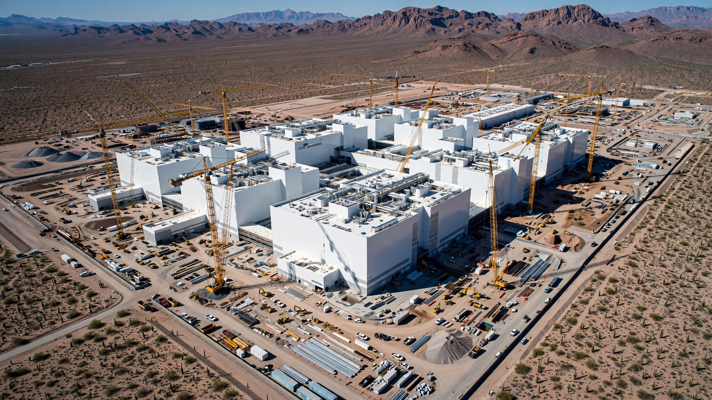

$265 Billion Buys You 30%. The Other 70% Still Runs Through Taiwan.
TSMC posted a $22 billion quarterly profit on July 16 and committed an additional $100 billion to Arizona semiconductor fabs, bringing its total US investment to $265 billion. That is the largest foreign direct investment in American history. Run the insurance math and it looks like a bargain: a 0.8% annual premium to protect $1.65 trillion in supply-chain value. But 70% of the world's most advanced chip capacity stays on an island 100 miles from Chinese missile batteries.

Twenty-two billion dollars in ninety days. Taiwan Semiconductor Manufacturing Company reported second-quarter earnings on Wednesday that beat analyst forecasts by 12%, marking a 77% year-over-year profit surge and the company's ninth consecutive quarter of double-digit growth. Revenue for the full year will climb more than 40%, up from a previous forecast of more than 30%, a revision that tells you TSMC's own planners underestimated the AI demand surge that began in late 2024 and has not let up. TSMC's market capitalization now stands at $1.97 trillion, nearly double Samsung Electronics.
CEO C.C. Wei used the earnings call to announce a further $100 billion investment in Arizona, on top of $165 billion already committed. Total: $265 billion across twelve fabs, advanced packaging facilities, and a "GigaFab" cluster targeting 100,000 wafer starts per month. "The largest foreign direct investment in US history," Wei said, and nobody disputed it.
Good news, possibly great news, if you run the numbers on what it means for American semiconductor independence. But independence is exactly what the numbers do not show.
What 73% Market Share Looks Like
Counterpoint Research pegs TSMC's share of the global pure-play foundry market (companies whose sole business is manufacturing chips designed by others) at 73% as of Q1 2026. At the leading edge, where chips are built on process nodes below 5 nanometers, the concentration is more extreme. Yole Group and EE Times estimate TSMC holds approximately 95% of the 3-nanometer market, with Samsung capturing most of the remainder and Intel’s 18A, its next-generation manufacturing process, still ramping.
That is concentration.
TSMC grew 36% in 2025 while non-TSMC foundries collectively managed 8%, a gap that reflects the structural reality of who actually builds the chips that AI runs on: not Samsung, whose 3-nanometer yields have lagged for three consecutive quarters, and not Intel, whose 18A node remains in early ramp.
Every NVIDIA Blackwell GPU, every Apple A-series processor, every AMD EPYC server chip, every Broadcom AI accelerator: fabricated on TSMC process technology, in TSMC fabs, overwhelmingly in Taiwan. Roughly 25% of TSMC's revenue now comes from AI applications, a figure SemiAnalysis projects at $40 billion for 2026. And that $40 billion in wafer revenue enables an estimated $2 to $3 trillion in downstream economic activity spanning data centers, cloud services, autonomous vehicles, and consumer electronics that depend on those chips to function at all.
The Insurance Premium Nobody Has Calculated
Treat Arizona as what it functionally is: a geopolitical insurance policy. TSMC's own guidance states that roughly 30% of its 2-nanometer-class and more advanced node output will eventually be produced in the United States. At full build-out, the Arizona complex is projected to run approximately 100,000 wafers per month, against Taiwan's advanced-node capacity of 240,000-plus wafers per month at 3nm and 2nm alone.
Now run the math.
TSMC's fabrication services underpin roughly $5 to $6 trillion in annual global technology value chain activity, a number you reach by tracing wafer revenue through chip packaging, system assembly, software, and end products. Thirty percent of that is approximately $1.65 trillion. A $265 billion capital investment to protect $1.65 trillion in annual supply-chain value means the up-front premium equals about 16% of one year's insured value. Amortize that over a 20-year fab lifetime: $13.25 billion per year to protect $1.65 trillion, or 0.8% annually.
Compare that to what the insurance industry charges for catastrophic risk coverage: premiums for hurricane-exposed coastal properties typically run 1 to 3% of insured value, and reinsurance for earthquake zones in Japan sits in a similar band. By those benchmarks, TSMC's Arizona premium is cheap.
Cheap for 30%.
But cheap insurance that covers only 30% of the loss is not actually cheap; it is partial, and the 70% left unhedged is exactly where the catastrophic risk concentrates.
37% Capex Intensity, and Why History Might Not Apply
TSMC raised its 2026 capital expenditure forecast to $60 to $64 billion, up from a prior range of $52 to $56 billion. Against estimated full-year revenue of approximately $167 billion, that puts TSMC's capex-to-revenue ratio of roughly 37%, a number that deserves scrutiny.
Context matters here. Semiconductor Intelligence data spanning 1984 to 2021 shows the semiconductor industry has averaged a capex-to-revenue ratio of 23%. Only twice has the five-year rolling average exceeded 28%: in 1985, right before the semiconductor market cratered 17%, and in 2000, right before it cratered 32%.
The signal has been consistent: when semiconductor companies invest at rates above 30% of revenue, a painful correction follows within one to two years as oversupplied capacity collides with softening demand.
TSMC is at 37%, and the question is whether three structural differences separate it from every prior capex cycle enough to invalidate the pattern. First, previous peaks reflected dozens of companies independently overbuilding capacity, but TSMC is 73% of the market. When TSMC spends, it is not speculating alongside competitors; it is responding to binding purchase commitments from Nvidia, Apple, AMD, and Broadcom, customers that have prepaid multi-year capacity reservations. Second, AI demand is growing faster than TSMC can build fabs. TrendForce reports that TSMC's 3nm node is fully sold out through 2027, and the company had to raise its monthly capacity target from 150,000 to 180,000 wafers at that node alone because demand exceeded original projections. Third, part of the spending is geopolitical hedging rather than demand-driven, which means the capex-to-revenue ratio overstates the degree of demand-side risk.
Counter: historical precedent has been declared dead before every crash, from Cisco in 1999 to homebuilders in 2006 to crypto in 2021. “This time is different” is the four most expensive words in finance, and no amount of structural reasoning changes the fact that 37% is a number the semiconductor industry has never sustained without a reckoning.
What $265 Billion Actually Builds
One hundred thousand wafers per month — the number of 300-millimeter silicon discs entering the production line each month, the standard measure of fab output, at a cost of $265 billion works out to $2.65 million per monthly wafer-start of installed capacity. Break that down further. Each advanced wafer at 3nm yields roughly 100 large AI-class chips, give or take, depending on how large the chip is and how many defective dies each wafer produces. At full build-out, Arizona's annual output would be approximately 1.2 million wafers, producing perhaps 120 million chips over the course of a year.
Spread the $265 billion investment across 20 years of operation and 120 million chips per year, and the per-chip infrastructure cost is roughly $110. Compare that to the selling price of the chips these fabs will produce: $10,000 to $40,000 for an AI accelerator. Do the division. Arizona adds 0.3 to 1.1% to chip cost. Negligible.
So the economics work on a per-chip basis. The real question is not cost but coverage.
70% Stays Behind
After every Arizona fab comes online, after every one of the 12 plants is operational, after the full $265 billion is deployed: 70% of the world's most advanced chips will still come from Taiwan, from a single island where one hundred miles of water separates it from a military that has built the world's largest conventional missile arsenal partially for the purpose of threatening it.
Strong deterrence factors exist. China's own technology sector depends on TSMC output, and destroying the fabs would eliminate the very asset China would want to control. The geopolitical status quo has held for more than 75 years, and powerful economic incentives on all sides reinforce it. A military scenario would also mean an immense humanitarian catastrophe for Taiwan's 24 million people, a reality that economic analysis can quantify in dollars but cannot capture in human terms.
But the deterrence is not the point. The point is what happens to the global economy if it fails.
One week of TSMC Taiwan shutdown would cost approximately 60,000 advanced wafer starts. At $20,000 to $30,000 per wafer, that is $1.2 to $1.8 billion in direct wafer value lost. But wafer value is a tiny fraction of the downstream impact. Each advanced wafer enables $500,000 to $2 million in end-product revenue when you trace the silicon through to finished servers, phones, and vehicles. One month of full shutdown: $30 to $120 billion in global GDP impact, depending on the downstream multiplier you choose and how fast inventories buffer the shock.
Arizona at 30% coverage does not solve this. It merely reduces the worst case from catastrophic to devastating, the difference between a technology supply chain that stops entirely and one that limps along at roughly a third of its prior capacity, with rationing, allocation battles, and a multi-year recovery timeline that would reshape the global economy's relationship with silicon.
Limitations
Several inputs in this analysis carry meaningful uncertainty. TSMC does not publicly disclose Arizona's expected wafer capacity in granular detail; the 100,000-wafer-per-month estimate is assembled from CEO commentary, TrendForce reporting, and TechSpot's analysis of individual fab modules. The "30% of advanced output" figure comes from TSMC's own statement but applies specifically to 2nm-class and beyond, not to the full range of advanced nodes. Downstream GDP multipliers for semiconductor supply disruption vary widely in the academic literature, from conservative estimates around 10x to aggressive scenarios above 50x; we used a range of 25x to 67x, which remains approximate. Finally, the insurance analogy simplifies a complex geopolitical risk into a financial framework. Real-world supply disruptions do not behave like actuarial tables, and the probability of a Taiwan crisis is not something anyone can put a reliable number on, and pretending otherwise is its own form of risk.
What You Can Do
If you manage a technology supply chain, start here: map your silicon dependencies to specific TSMC nodes and fabs, ask your chip suppliers whether your parts will be fabricated in Arizona or Taiwan, ask when that transition is scheduled, and if the answer is “Taiwan, indefinitely,” tell your board you are carrying unhedged concentration risk on the most critical input in your product.
If you invest in semiconductors: watch the capex-to-revenue ratio. TSMC at 37% is historically unprecedented for a sustained period. Either AI demand is structurally different from every prior technology cycle, or the correction is being deferred rather than prevented, and monitoring TSMC's quarterly capacity utilization rates at advanced nodes will tell you which: if utilization drops below 85% while capex remains above 35% of revenue, the historical pattern is reasserting itself.
If you care about geopolitical risk in plain terms: $265 billion is not a solution but a down payment. The world's AI infrastructure still runs through a single company concentrated on a single island, and no amount of Arizona concrete changes that arithmetic until the 30% becomes 50% or more. ASML, which reported this week that it will boost EUV (extreme ultraviolet lithography) production capacity by 30% through 2027, represents yet another chokepoint — one company in the Netherlands building every machine that prints circuits at every advanced fab on Earth.
The Bottom Line
TSMC earned more money in the second quarter of 2026 than the roughly $30 billion GDP of Iceland, and none of the numbers that follow are metaphors. They are the direct financial expression of a world that built a $6 trillion technology economy on the manufacturing output of one company, then looked at the map, and committed $265 billion to move 30% of it to safer ground. The other 70% rests on a geopolitical status quo that has held for decades but faces growing pressure, and $265 billion does not change that math.